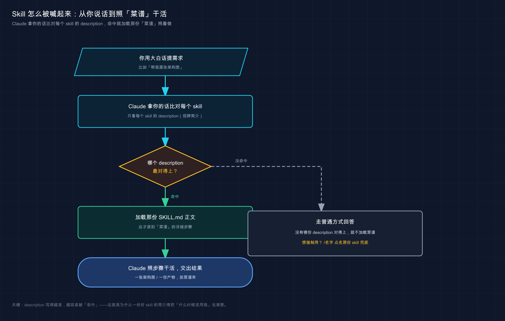

📚 系列导航：上一篇 26 Skill 是什么 把原理讲透了——
SKILL.md是什么、description凭啥决定 Claude 用不用它。这一篇不讲道理，真刀真枪：带你查一遍手里有哪些 skill、用一句话喊起一个、盯着它把活干完，把「会用别人的 skill」落到地上。
比如要赶一份代码库结构图，给老板汇报用。换平时，咱们得先在脑子里理节点、画 Mermaid 草图、调配色、导出 PNG，一套下来稳稳半天。这时候只要对着 Claude Code 敲一句「帮我画一张这个项目的架构图」——Claude 就自己搞定了。
它不问你任何参数，自己加载一个叫 baoyu-diagram 的 skill，按里面写死的暗色设计系统排好版、生成 SVG、转成 @2x PNG，前后不到五分钟，图就躺在 docs/assets/ 里了。
这一刻你才真正理解 skill 的价值：它不是「让 Claude 更聪明」，而是「让 Claude 把某件事，每次都按同一套靠谱流程做出来」。半天压成五分钟，差的就是这套写好的流程。
上一篇你已经知道 skill 是什么了。这一篇只干一件事：带你把这个「半天变五分钟」的体验，亲手跑一遍。
看完这一篇，你会拿到：
- 一句话查出当前会话里到底有哪些 skill 可用，不再瞎猜
- 看懂一个真实
SKILL.md长什么样，知道description那行凭啥决定它触不触发 - 用「自然语言触发」和「
/直呼其名」两种方式跑完一个 skill 的完整流程，每步都有预期输出 - skill 喊不动时的三步排查表（说法太含糊 / description 不匹配 / 压根没启用）
- 把一个 skill 提交进项目、让全队照同一套流程干活的具体做法
01 先别急着用：看看手里到底有哪些 skill
动手第一步不是「用 skill」，是搞清楚你现在有哪些 skill 能用。
新手最容易犯的错，是凭印象瞎喊——「我记得有个画图的 skill 吧？」然后对着 Claude 喊半天没反应，以为是 skill 坏了，其实压根没装。先查清家底，比啥都强。
类比：照菜谱做菜前，先翻翻你这本菜谱里到底收了哪几道菜。 你不会对着厨房空想「今天做个红烧肉吧」，得先确认菜谱里有「红烧肉」这一页、食材步骤都齐。skill 就是 Claude 的菜谱，每个 SKILL.md 是一道写好的菜——先翻目录，确认这道菜在册，再开火。
查看的办法特别简单，在 Claude Code 会话里用大白话问它就行：
有哪些可用的 skill？
官方文档里用的是英文问法 What skills are available?，中文一样认。预期：Claude 会列出当前会话能用的 skill，每个带名字和一句话简介。在这个教程项目里跑，列表里就有那个画图的：
baoyu-diagram — 生成专业的暗色主题 SVG 图（架构图 / 流程图 / 时序图 / 思维导图……）
💡 一句话总结：用 skill 之前，先在会话里问一句「有哪些可用的 skill？」确认你要的那道菜在册，再开火，别对着不存在的 skill 瞎喊。
还有两个查家底的小动作，顺手记一下：
/skills 菜单——在输入框敲 /skills 回车，会弹出一个可视化菜单，把所有 skill 列出来，还能在这里切换每个 skill 的启用状态（高亮后按 Space 循环切换，Enter 保存）。比纯文字列表更直观。
/doctor 体检——这条偏进阶：如果你装了一大堆 skill，Claude 可能因为「描述预算」装不下、把一部分 skill 的描述截断了，导致它「看不全」。/doctor 能告诉你预算有没有溢出、哪些 skill 受影响。新手一般用不到，但哪天发现某个 skill 莫名其妙不触发了，先跑 /doctor 看一眼。
02 拆开一个真 skill：SKILL.md 长什么样
光知道「有这个 skill」还不够，得看懂它内部长什么样，你才明白它凭啥被触发、能干啥。
正好，这个教程项目里就躺着一个真 skill。咱们不看官方文档里的玩具示例，直接扒这个真实在用、天天靠它出图的 baoyu-diagram。
它在项目里的位置是：
.claude/skills/baoyu-diagram/
├── SKILL.md # 主说明（必需）
├── references/ # 各类图的详细排版规范（按需加载）
│ ├── architecture.md
│ ├── flowchart.md
│ └── sequence.md
└── scripts/
└── main.ts # SVG 转 PNG 的脚本（被执行，不进上下文）
看出门道没？一个 skill 就是一个文件夹，SKILL.md 是入口，旁边可以挂参考文档和脚本。SKILL.md 必需，其余都是可选的「料」——参考文档让主说明保持精简（用到哪类图才加载哪个），脚本是给 Claude 跑的工具。
打开它的 SKILL.md，最上面那块 --- 围起来的就是命门，叫 frontmatter（前置元数据，写在文件最顶端的配置）：
---
name: baoyu-diagram
description: Create professional, dark-themed SVG diagrams of any type — architecture diagrams, flowcharts, sequence diagrams... Also trigger when the user says "画个图" "画一个架构图" "diagram" "flowchart"...
version: 1.117.3
---
--- 下面那一大段 markdown，才是 Claude 真正要照着干的「菜谱正文」（设计系统、配色、排版规则、转 PNG 的命令）。
这里有个上一篇讲过、但你现在该亲眼对上号的关键点：那行 description，是 Claude 判断「这次该不该用这个 skill」的核心依据（frontmatter 里还有个可选的 when_to_use 字段可以补充触发条件，两者合计截断为 1536 字符）。
你注意到没——这个 description 里明晃晃塞了一堆中文触发词：「画个图」「画一个架构图」，还有英文的 diagram、flowchart。这不是随便写的，是作者故意把用户可能说的话都铺进去，好让 Claude 一听到这些词就反应过来「该我上了」。
类比：菜谱页眉那行「适合：家宴、待客、下饭」。 你翻菜谱找「待客菜」时，一眼扫到页眉这行字，就知道这道菜对路。description 就是 skill 的页眉标签——Claude 拿你的话去比对每个 skill 的 description，谁的标签最对得上，就翻开谁那一页。
所以记住这条因果链，后面排查全靠它：
你说的话 → Claude 拿去比对各个 skill 的 description → 匹配上了 → 加载那个 SKILL.md 的正文 → 照里面的步骤干活。
description 写得越贴近你的真实说法，触发越准。这也是为什么下一节排查「喊不动」，第一个要查的就是它。

这张图把「一句话怎么变成 skill 干活」拆成四步：你说话 → Claude 拿去和每个 skill 的 description 比对 → 命中后加载对应 SKILL.md 正文 → 照里面写死的步骤产出结果。看懂这条链，你就知道排查该从哪一环下手。
💡 一句话总结：一个 skill 就是一个带
SKILL.md的文件夹，最顶上的description是触发命门——Claude 拿你的话去比对它，对上了才翻开这页菜谱。
03 跑通第一个：自然语言喊一声，看它出活
家底清了、结构懂了，开整。这一节用 baoyu-diagram 走一遍最常见的用法：用大白话喊，让 Claude 自己判断该不该上。
这是 skill 最爽的地方——你不用记任何命令，该用哪个 skill 是 Claude 自己挑的。
第一步，在教程项目根目录把 Claude Code 起起来：
claude
预期：进入会话，底部出现输入框。
第二步，直接用大白话提需求——注意，这里一个字都没提 baoyu-diagram 这个名字：
帮我画一张图，说明 Claude 的「想→做→看」代理循环
预期：Claude 一听「画一张图」，就去比对各 skill 的 description，命中 baoyu-diagram 那行的 diagram/「画个图」，于是自动加载它，然后照菜谱正文干活：读对应的参考文档（流程图就读 references/flowchart.md）、按暗色设计系统排版、生成一个 .svg、再跑脚本转成 @2x.png。
干完它会告诉你产出在哪，大致长这样：
已生成图表：
docs/claude-code/assets/27-agent-loop.svg
docs/claude-code/assets/27-agent-loop@2x.png
看到这两个文件 = skill 触发成功、活也干完了。 整个过程你没碰任何参数，全靠一句大白话。
这就是 skill 和「普通对话」最大的区别。摆一张对比，差距一目了然：
| ❌ 没有 skill | ✅ 有 skill | |
|---|---|---|
| 你要说的 | 详细描述配色、字号、布局、转 PNG 怎么转…… | 一句「帮我画张图」 |
| 产出稳定性 | 这次暗色那次亮色，每次风格飘 | 每次都套同一套设计系统，稳定一致 |
| 你要记的 | 一堆参数和步骤 | 啥都不用记 |
说白了，skill 把「每次都要交代一遍的繁琐流程」一次性写死了。你只管说要什么，「怎么做得专业」是菜谱的事。
不想等它猜？直接点名
有时候你很确定就要用某个 skill，懒得让它猜，直接 / 点名最快：
/baoyu-diagram 画一张用户登录的时序图
预期：跳过「匹配 description」这一步，直接加载 baoyu-diagram 并执行，/ 后面那串话作为参数传进去（这里就是告诉它画什么图）。
两种方式啥时候用哪个？一般来说：
- 探索、不确定该用啥 → 用大白话，让 Claude 自己挑（说不定它挑的比你想的还准）。
- 明确知道要哪个、要它立刻执行 →
/点名，尤其是那种「有副作用、不能乱触发」的 skill（比如部署、提交），官方就建议这类干脆只让你手动/调，别让 Claude 自作主张。
💡 一句话总结：跑 skill 两条路——大白话让 Claude 自己挑、
/名字直接点名；前者适合探索，后者适合「我就要它、立刻干」。
04 喊了没反应？三步排查，对号入座
真上手你迟早会遇到：喊了一句，Claude 没用 skill，自己吭哧吭哧用普通方式干了。先别慌，也别觉得 skill 坏了——九成是下面三种情况之一。官方的故障排查就这几条，下面按「最常见」排了序。
类比：照菜谱做菜，菜没成，无非三种原因——你说的菜名跟菜谱页眉对不上、菜谱根本没收进这本书、或者你话说得太含糊厨师没听懂。 一条条排，总能揪出是哪环。
第一步：先怀疑「你说得太含糊」（最常见）。
很多时候不是 skill 的错，是你那句话离 description 太远。比如 baoyu-diagram 的 description 里写的是「画图 / diagram / 架构图」，你要是说「给我整个可视化的东西」，Claude 可能就没把它跟「画图」对上。
解法：把话往 description 上靠，换个更直白的说法重说一遍：
帮我画一张架构图
带上「画」「图」这种明确动词，命中率立刻上去。这是最快的一招，先试它。
第二步：确认「这个 skill 到底在不在册」。
回到第 01 节那招，问一句：
有哪些可用的 skill？
预期：如果列表里根本没有你要的那个 skill，那问题就清楚了——它压根没装，或者没被加载（比如项目级 skill 还没通过信任、或你启动目录不对）。这种就别在「怎么触发」上耗了，先把它装上 / 加载上（第 05 节讲项目级怎么让它生效）。
第三步：确认了在册、还是不触发——直接 / 点名兜底。
如果第二步确认了它在列表里、第一步换了说法也还是不灵，别跟它较劲，直接 /名字 手动调起来：
/baoyu-diagram 画一张架构图
只要它在册，/ 点名一定能调起来（/ 是「我点名要你」，绕过了「Claude 自己判断」那一环）。这一步既是兜底，也能帮你定位问题：/ 调得起来 = skill 本身没毛病，纯粹是自动触发没匹配上，那回头优化 description 就行。
把这三步整理成一张排查表，喊不动时照着走：
| 现象 | 先查什么 | 怎么解 |
|---|---|---|
| 喊了没反应，Claude 用普通方式干了 | 你的说法离 description 远不远 |
换更直白的说法重说（带明确动词） |
| 换了说法还是不灵 | skill 在不在「可用列表」里 | 问「有哪些可用的 skill？」；不在就先装 / 加载 |
| 确认在册、还是不自动触发 | 是不是纯粹匹配没中 | /名字 手动点名兜底，事后优化 description |
⚠️ 反过来也有「触发太勤」的烦恼——某个 skill 动不动就自己蹦出来。官方的解法是：把它的
description写得更具体（别用太宽的词），或者给它加disable-model-invocation: true，直接禁止 Claude 自动触发、只许你手动/调。这个改法属于「造 / 改 skill」，下一篇会展开。
💡 一句话总结：喊不动按三步排——先怀疑说法太含糊（换直白说法）、再查在不在册、最后
/点名兜底；这三招覆盖你会遇到的几乎所有「不触发」。
05 让全队都能用：把 skill 提交进项目
到这儿你已经会用 skill 了。但有个问题：上面装在 ~/.claude/skills/ 里的 skill，只有你自己电脑上有，同事拉下代码是没有的。
想让整个团队都照同一套流程干活，得换个地方放——项目级 skill。
类比：这道菜的菜谱，别只贴在你自家厨房，印进随项目一起发的「公司菜谱册」里。 谁拿到这本册子（clone 了仓库），翻开就能照着做同一道菜。个人 skill 是你私房菜谱，项目级 skill 是跟代码一起发出去、人手一份的公共菜谱。
差别就一个：放哪、要不要提交进 Git。看这张对照：
| 个人 skill | 项目级 skill | |
|---|---|---|
| 放在哪 | ~/.claude/skills/<名>/SKILL.md |
项目里的 .claude/skills/<名>/SKILL.md |
| 谁能用 | 你所有项目，但只有你这台机器 | clone 了这个仓库的所有人 |
| 进不进 Git | 不进（在你主目录） | 进，跟代码一起提交 |
| 典型用途 | 你的个人习惯流程 | 团队统一规范（部署、提交格式、出图风格） |
具体怎么落地，就三步：
第一步：把 skill 放进项目的 .claude/skills/（而不是主目录）：
你的项目/
└── .claude/
└── skills/
└── team-commit/
└── SKILL.md
第二步：提交进版本控制。 像提交普通代码一样：
git add .claude/skills/
git commit -m "feat: 加一个团队统一的 commit skill"
第三步：同事拉下来就能用——这是项目级最香的地方：别人 clone 仓库、git pull 之后，这个 skill 自动就在他们的会话里了，不用各自手动装。整个团队从此「画图都是同一套风格」「提交都走同一套检查」。
这里有个官方明确的安全细节，务必记住：别人项目里检入的 skill，首次打开该项目时会弹一个「工作区信任」对话框让你确认。为啥要这一道？因为 skill 可以给自己授予工具权限（比如自动跑命令），信任一个仓库前，先扫一眼它的 skill 里写了啥，别闭眼点同意。官方原话：
在信任存储库之前查看项目 skills，因为 skill 可以授予自己广泛的工具访问权限。
拉外部项目时就该按这条做。比如 clone 一个开源仓库，信任前翻一眼它 .claude/skills/ 下的 SKILL.md，有可能发现里面某个 skill 在 allowed-tools 里放开了一堆 Bash 权限——倒不一定是恶意，但宁可看清楚再点信任。这一眼，值得花。
💡 一句话总结：想让全队用同一个 skill，放进项目的
.claude/skills/并提交进 Git，别人 clone 就自动有；但信任别人的项目 skill 前，先扫一眼它都申请了啥权限。
06 动手：从零装一个个人 skill，亲手喊起来
前面用的都是现成的 baoyu-diagram。这一节带你从零造一个最简单的 skill 并触发它——不为造多复杂，就为亲眼看到「写文件 → 它出现在列表 → 一句话喊起来」这条完整链路。全程不依赖任何复杂环境。
我们做一个超简单的：让 Claude 用「咖啡馆聊天风」帮你解释一段代码。
第一步：建 skill 目录（个人级，放主目录，你所有项目都能用）。Mac / Linux：
mkdir -p ~/.claude/skills/explain-casual
Windows（PowerShell）：
mkdir $HOME\.claude\skills\explain-casual
预期：~/.claude/skills/ 下多了个 explain-casual 文件夹。
第二步：写 SKILL.md。 用你顺手的编辑器，在 ~/.claude/skills/explain-casual/SKILL.md 里贴入：
---
description: 用轻松的咖啡馆聊天风格解释一段代码。当用户说「用大白话讲讲这段代码」「这段代码在干嘛」「讲讲这个函数」时使用。
---
## 任务
用最口语、最轻松的方式解释用户给的代码，像跟朋友在咖啡馆闲聊，不要学术腔。要求：
1. 先一句话说清这段代码整体在干嘛。
2. 再挑出关键的几行，逐个用大白话讲。
3. 最后提一句：有没有看着别扭、可能埋坑的地方。
划重点：那行 description 里故意塞满了用户可能说的话——「用大白话讲讲这段代码」「这段代码在干嘛」「讲讲这个函数」。这就是第 02 节说的「页眉标签」，塞得越贴近真实说法，触发越准。
第三步：确认它进了列表。 这里有个官方细节要注意：会话启动时不存在的「顶级 skill 目录」需要重启才能被监视到。咱们刚新建了 explain-casual 这个目录，所以保险起见新开一个会话：
claude
进去后问：
有哪些可用的 skill？
预期：列表里出现了 explain-casual，带着你写的那句中文描述。看到它 = skill 装好且被加载了。
第四步：用大白话喊它（别提名字）。 在会话里贴一段代码让它讲，比如：
用大白话讲讲这段代码：
def average(numbers):
return sum(numbers) / len(numbers)
预期：Claude 把你这句「用大白话讲讲这段代码」跟 explain-casual 的 description 对上，自动加载这个 skill，然后照里面三步走：先一句话说它算平均值；再讲 sum(numbers) / len(numbers) 这行；最后提醒你传空列表会除以 0 崩掉（这正是第 1 步任务里「埋坑的地方」那条在起作用）。整个口吻是轻松的咖啡馆风，不是干巴巴的文档腔。
第五步：对比一下「点名调用」。 再试 / 直呼：
/explain-casual def average(numbers): return sum(numbers) / len(numbers)
预期：同样的效果，但这次是你点名触发的——跳过了「Claude 自己判断」那一环，/ 后面的代码作为参数传进去。
跑通这五步，你就把 skill 的完整生命周期亲手摸了一遍：写 SKILL.md → 它出现在可用列表 → 大白话能喊起来 → / 也能点名。以后用任何别人的 skill，本质都是这套机制，无非菜谱内容更复杂。
⚠️ 如果第三步列表里没看到
explain-casual：十有八九是没重启会话（新建顶级目录得重启才被监视到），退出claude重进一次。要是重进还没有，检查文件路径和文件名是不是一字不差地叫SKILL.md（全大写）。
💡 一句话总结：亲手造个最简单的 skill 跑一遍——建目录、写
SKILL.md（description 塞满真实说法）、重启确认进列表、大白话喊起来；这条链路走通，别人的 skill 你也就全会用了。
07 小结
这一篇全程在动手，把「会用别人的 skill」从概念落成了肌肉记忆。把核心动作串起来回顾：
| 你要做的事 | 怎么干 | 关键点 |
|---|---|---|
| 查有哪些 skill | 问「有哪些可用的 skill？」/ /skills 菜单 |
用之前先确认它在册 |
| 看懂一个 skill | 读它的 SKILL.md |
最顶上的 description 是触发命门 |
| 触发一个 skill | 大白话喊 / /名字 点名 |
探索用前者，要它立刻干用后者 |
| 喊不动排查 | 换直白说法 → 查在不在册 → / 点名兜底 |
九成是「说法太含糊」 |
| 让全队用 | 放进项目 .claude/skills/ 并提交 Git |
信任别人的项目 skill 前先看它申请了啥权限 |
你现在应该能： 在任何会话里查清手里有哪些 skill、看懂一个真实 SKILL.md 的结构和它凭啥触发、用两种方式把一个 skill 跑起来、喊不动时三步定位问题，还能把一个 skill 提交进项目让团队共享。这套「会用别人的 skill」的能力，是你之后白嫖整个 skill 生态的入场券——社区里大量现成 skill，装上、喊一声，就是别人写好的专业流程为你所用。
开头那张「半天变五分钟」的架构图，就是这么来的。你现在也有了同一把钥匙。
下一篇 28「skill-creator：造你自己的 skill」——会用别人的菜谱了，下一步自然是自己写菜谱。你有没有哪段流程，是每次都要给 Claude 重复交代一长串？（这种流程往往不止一个。）下一篇就教你用官方的 skill-creator，把这种「反复粘贴的繁琐流程」一次性固化成你专属的 skill，从「用菜谱的人」变成「写菜谱的人」。